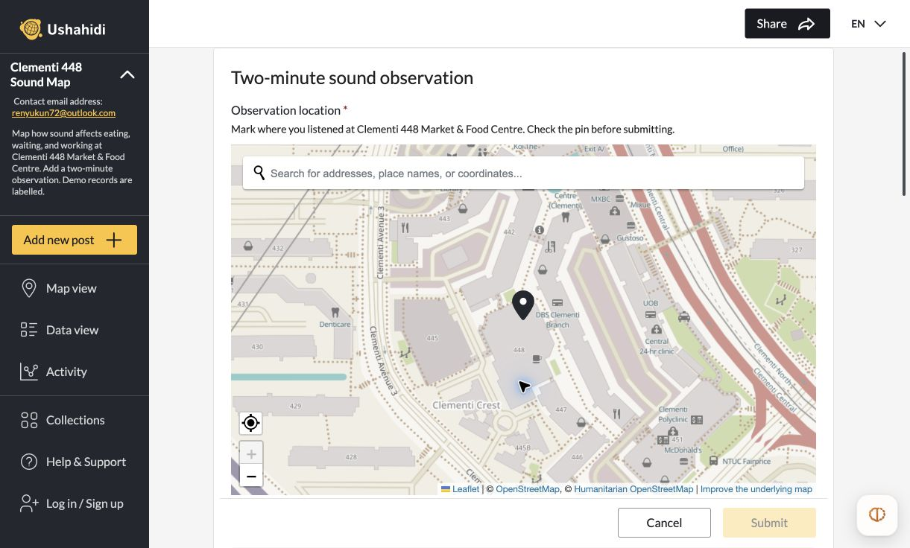
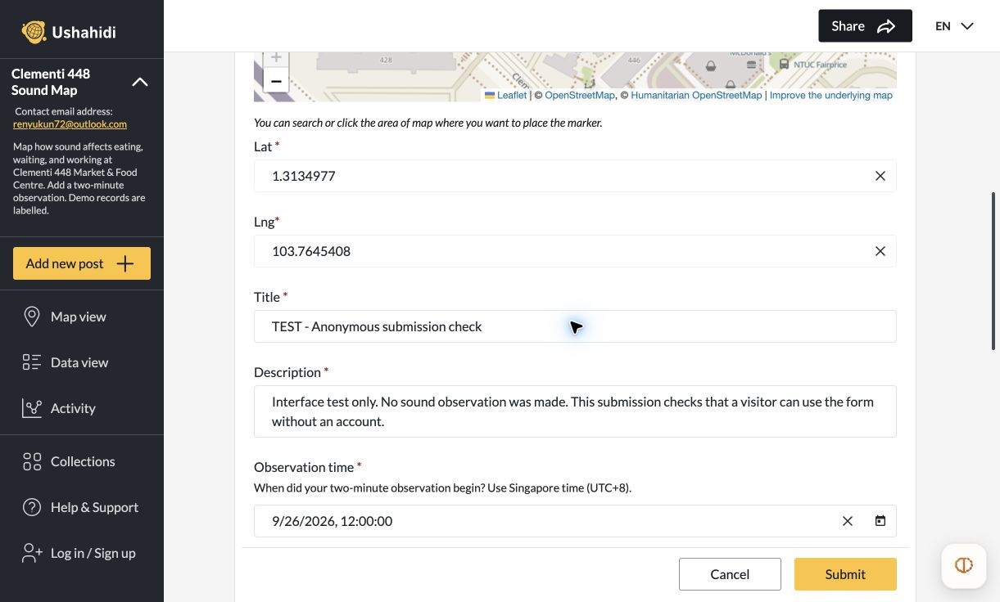
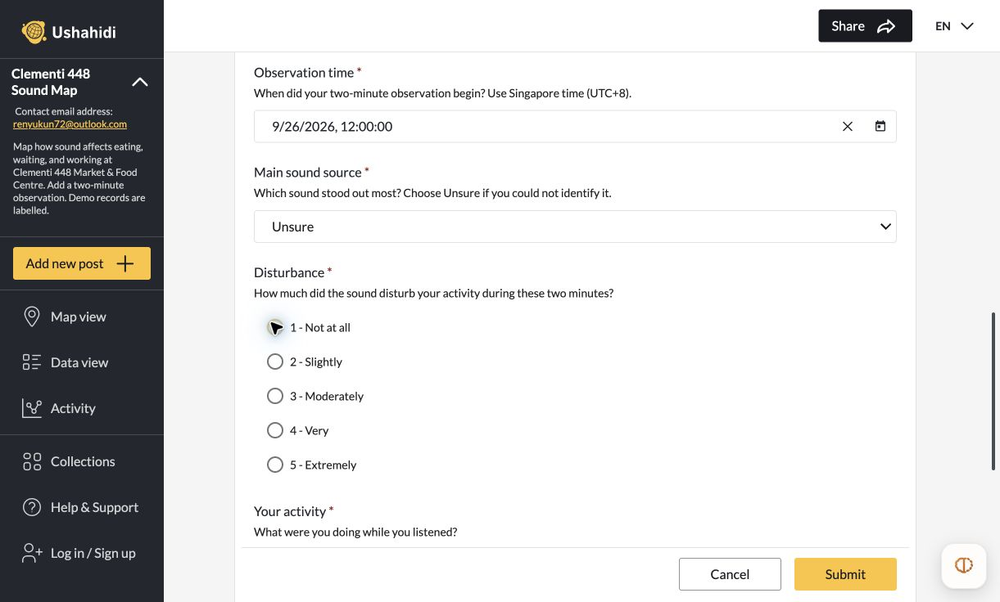
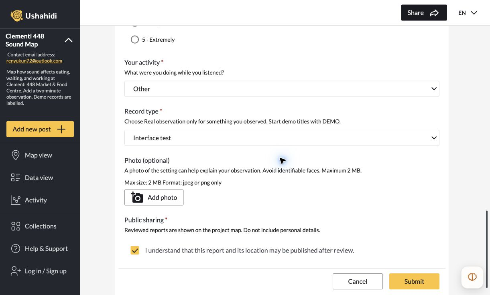
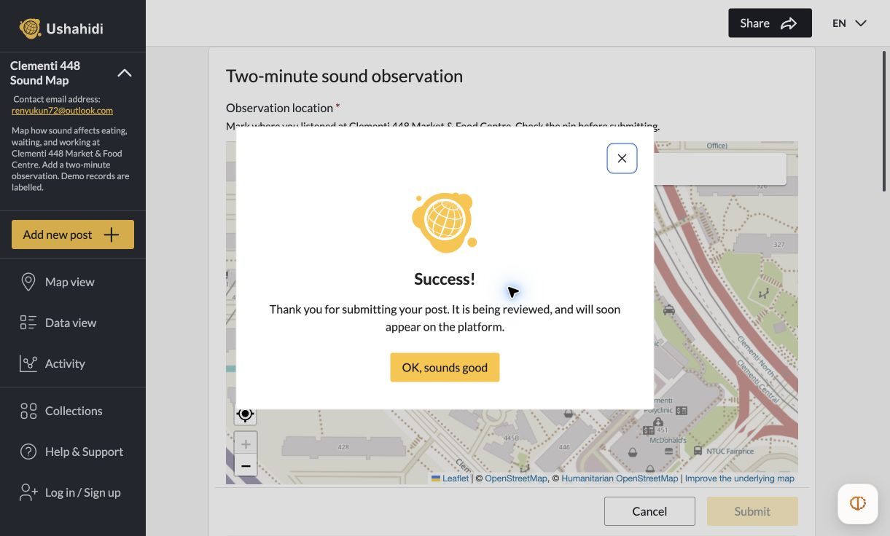

Participant guide
Make a two-minute observation
Use a phone or computer. All fields are required except the photo. The screenshots below show a form test; no field observation was made.
01Listen and mark your location
For a real report, choose a safe place at Clementi 448 Market & Food Centre and listen for two minutes. Open the form and tap or click where you listened. Check the pin before continuing. The coordinates update automatically.

02Describe what you heard
Enter a short title and description. State what you heard and how it affected your activity. Enter the observation’s start date and time in Singapore time (UTC+8). Leave out names and personal details.

03Choose the sound source and rating
Select the main sound source, or Unsure. Rate how much it disturbed your activity. Then choose what you were doing. The rating is your experience, not a decibel reading.
- 1 · Not at all
- 2 · Slightly
- 3 · Moderately
- 4 · Very
- 5 · Extremely

04Identify the record and submit
Choose Real observation only for something you observed. Use Hypothetical demo for an invented example and Interface test for a form test. A photo is optional: JPEG or PNG, maximum 2 MB. Avoid identifiable faces. Read and tick the public-sharing statement, then select Submit.

05Check confirmation
The success message confirms receipt. Your report will appear publicly after review. Open the map and select a marker to read a published report. Nearby points may be grouped; zoom in to separate them. Contact the project email if a report needs correction.
